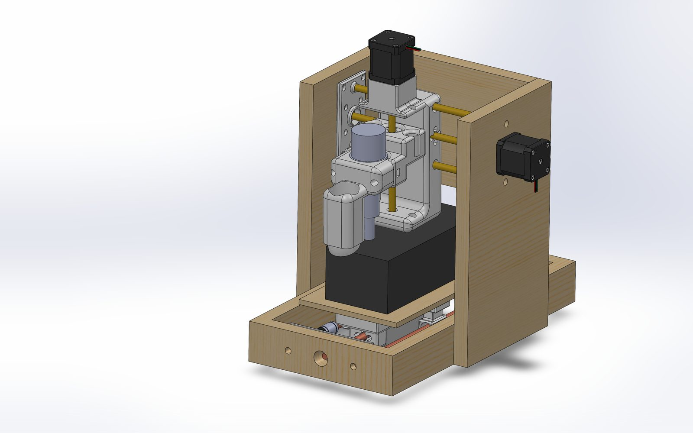
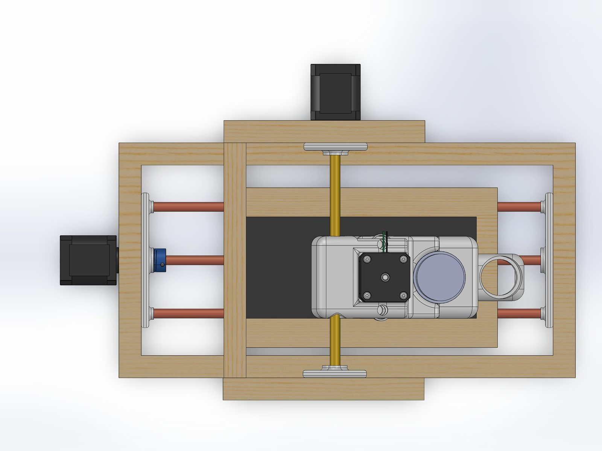
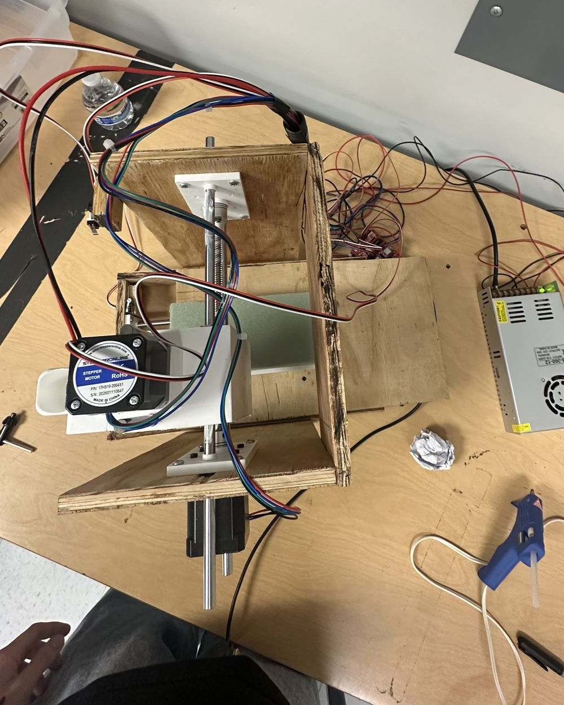
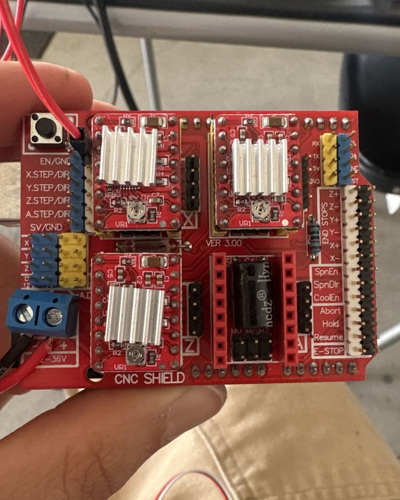
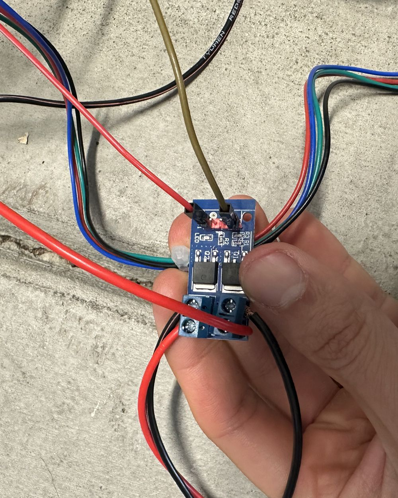
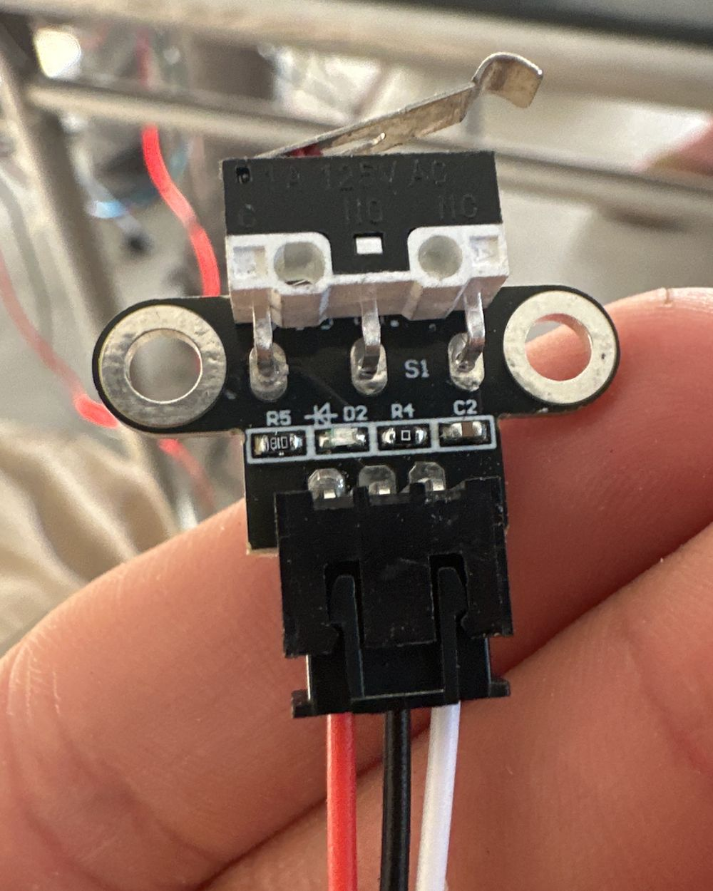
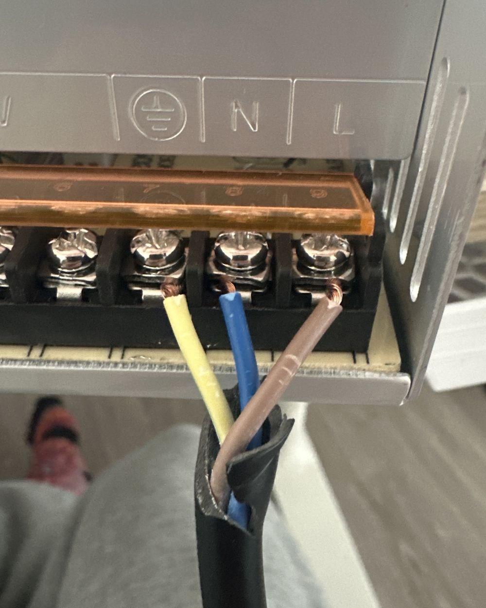
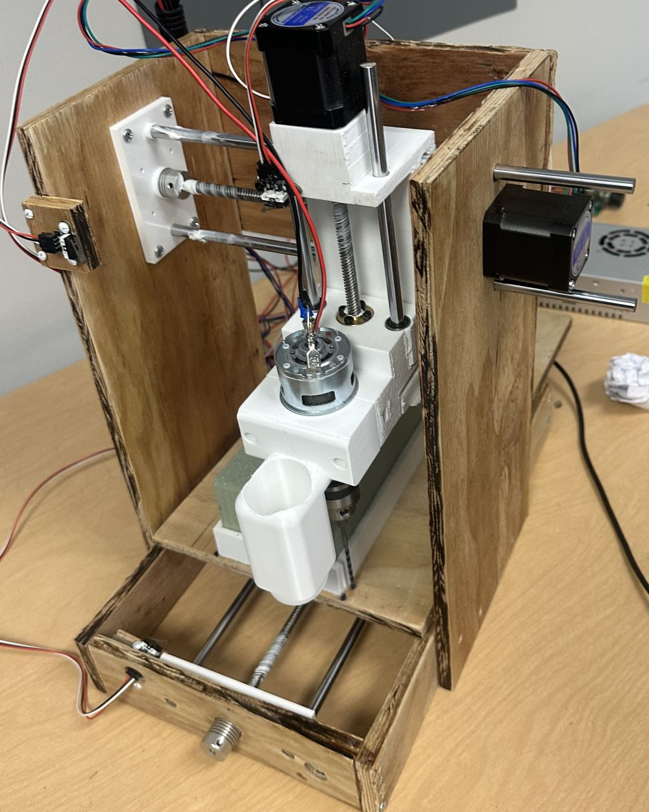
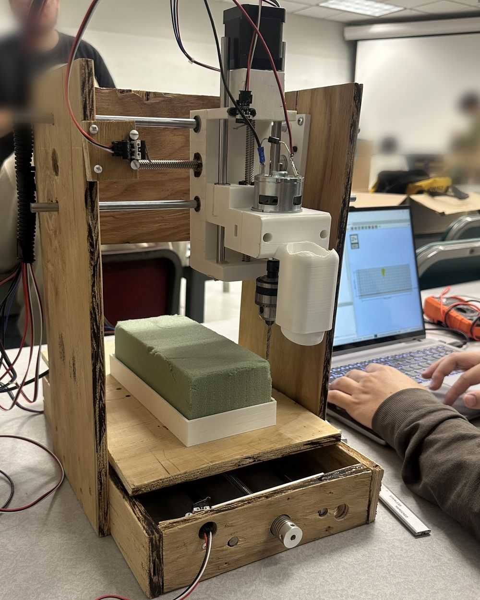

§ 01 / build
The whole stack, by hand.
I wanted to understand multi-axis motion control by building all of it myself: the mechanics that move, the electronics that drive them, and the firmware that coordinates them. Nothing came from a kit.
Mechanical
- Three linear axes on lead screws with bearing supports, for repeatable positioning without belts.
- Wood frame and base, chosen for fast iteration and low cost.
- Custom 3D-printed spindle mount clamping the rotary tool to the Z carriage. Designing it forced me to think about tool runout, clamp stiffness, and how the mount meets the moving axis.
Electronics & control
- Arduino-based controller wired by hand to the stepper drivers and motors.
- GRBL firmware configured for the machine: steps per mm, axis limits, feed rates, acceleration.
- G-code streamed to the controller to run coordinated 3-axis toolpaths.


§ 02 / lessons
Skills that carried forward.
01
Multi-axis motion control
Tuning steps/mm, acceleration and feed rates in GRBL showed me how motor limits, mechanical stiffness and firmware settings interact.
02
Electromechanical integration
Wiring drivers, motors and a controller by hand, then debugging when an axis stalled or ran backward.
03
Printed parts under real load
The spindle mount was my first printed part that had to hold a spinning tool. It shaped how I tolerance and fasten parts on the arm.







next buildthe metal is already remembering it